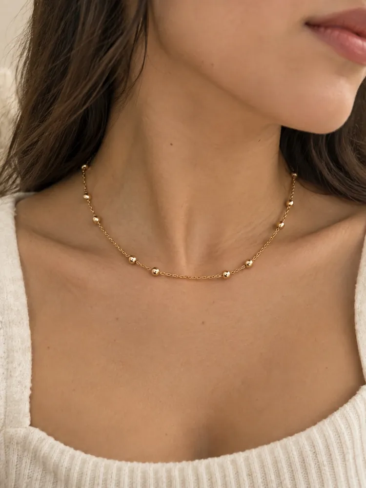
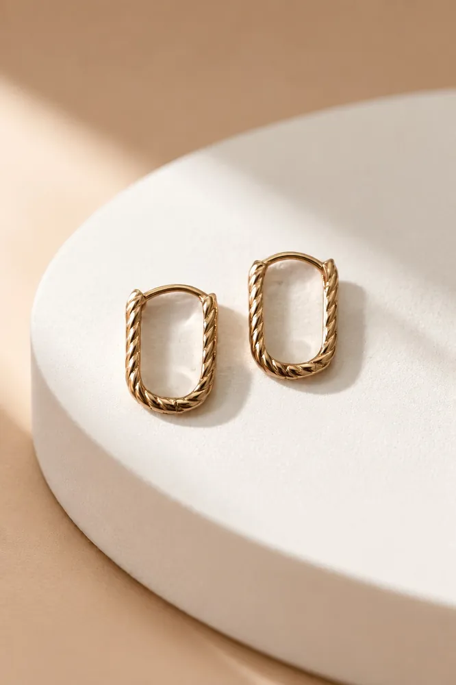
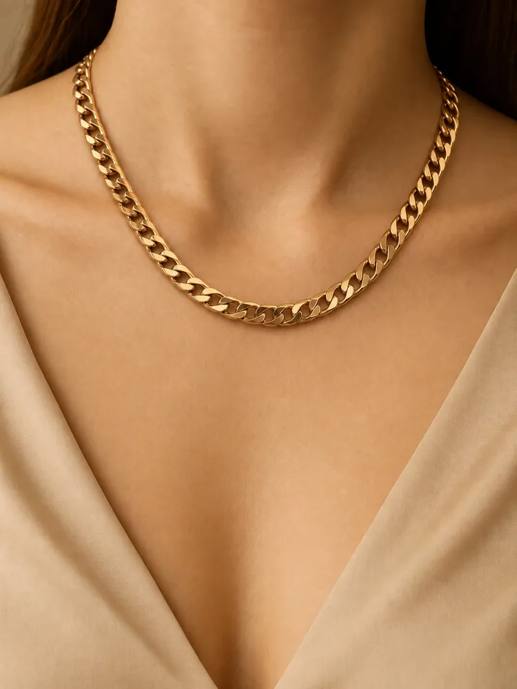
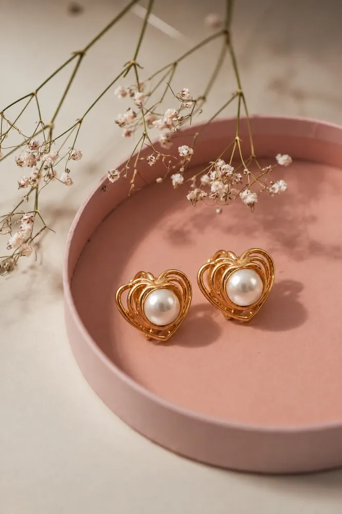

Joyas en acero de alta calidad enchapado en oro rose de 18k, seleccionadas para ti desde Piura y con envíos a todo el Perú: aretes, anillos, cadenas y pulseras hipoalergénicas, para consentirte seguido — no solo una vez al año.
Acero de alta calidad enchapado en oro rose de 18k: brillo que aguanta el uso diario.
Libres de níquel, plomo y cadmio. Aptas para la mayoría de las pieles sensibles.
Armamos tu pedido persona a persona y coordinamos el envío contigo directamente.
Piezas desde S/ 25. Atención desde Piura, con envíos a todo el Perú.




Fotos reales de nuestras propias piezas, sin filtros ni catálogos de fábrica — para que sepas exactamente qué estás comprando.
Eliges tus piezas en el catálogo, armas tu pedido en el carrito y lo confirmas por WhatsApp. Coordinamos el pago y el envío directamente contigo.
Hacemos envíos a todo el Perú, con despacho local en Piura.
Somos una marca de joyas con base en Piura, Perú. Coordinamos la entrega o el envío directamente contigo por WhatsApp.
Sí. Es acero de alta calidad enchapado en oro rose de 18k, libre de níquel, plomo y cadmio — por eso se consideran hipoalergénicas para la mayoría de las pieles.
Escríbenos por WhatsApp contándonos tu caso y lo vemos juntas.